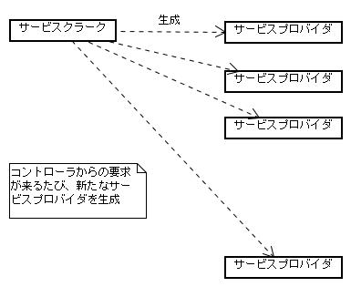

ここではまず、SIGViewerの設計、実装面に特化した説明において必要な用語について説明する．
（注） SIGVerseアーキテクチャにおける基本的要素（シミュレーションサーバー、コントローラ、サービスプロバイダ等）に関する説明は、別紙のSIGVerse構造説明書に述べてあるのでここでは繰り返さない．
SIGViewerはシミュレーション状況を見るためのビューアとして役割の他に、サービスプロバイダとしての機能も持っている．
サービスクラークは、SIGViewerにおける、サービスの接続受付窓口である． コントローラからの接続要求はサービスクラークが受け取る．
サービスクラークはコントローラからのサービス接続要求を受け取ると、サービスプロバイダを生成し、その後の処理をサービスプロバイダに委譲する．
サービス要求は複数のコントローラから同時に来る可能性がある．そのような状況に対応するため、サービスクラークはそれぞれの要求に対して個別にサービスプロバイダを生成する．この仕組みにより、複数個のサービス要求に対しても同時かつ並行的に対応している．

SIGViewerにおいてはSgv::ServiceClerkがサービスクラークに当たるクラスである．
サービスクラークが受け付けたコントローラからの処理要求を実際に処理するのがサービスプロバイダである．
SIGViewerにおいてはSgv::ServiceProviderがサービスプロバイダに当たるクラスである．
シミュレーションサーバー上のシミュレーション状況を保持するクラス．
SIGViewerは定期的に「その時点でのサーバー上のシミュレーション世界」をサーバーに要求する．サーバーはそれに応え、その時点での世界状況をSIGViewerに返信してくる．
SimWorldはサーバー上でのシミュレーション結果のみを含むオブジェクトなので、ビューアでの表示のためには一部の情報が不足したものとなっている．
シミュレーション世界上に存在する個々のオブジェクトを表現するクラス． シミュレーションオブジェクトは、静止物を表すもの（＝エンティティ）と、能動的に動く頭脳（＝コントローラ）を持ったもの（＝エージェント）に分かれる．
シミュレーションワールドと同じく、SimObjはサーバー上でのシミュレーション結果のみを含むオブジェクトなので、ビューアでの表示のためには一部の情報が不足している．
SimWorldはシミュレーションサーバー上の世界情報だったが、それに対応するビューア上の世界がビジュアルワールド(VisWorld)である．
VisWorldはSimWorldの持つ情報のほかに、形状情報も持っている．すなわちSIGViewer上での世界表示に必要なすべての情報を保持するクラスである．
概念的には「SimWorld＋物体形状データ＝VisWorld」と考えてよい．
SimWorldに対するVisWorldと同じく、SimObjに対応するビューア上でのシミュレーションオブジェクトがVisObjである．すなわち、VisObjは、SimObjの持つ情報に加えて、物体の形状に関する情報を持つものである．
実際には、VisObjはSimObjとOgreノード（＝形状データに対応）へのポインタを持つクラスである．
 （株）数理システム
（株）数理システム